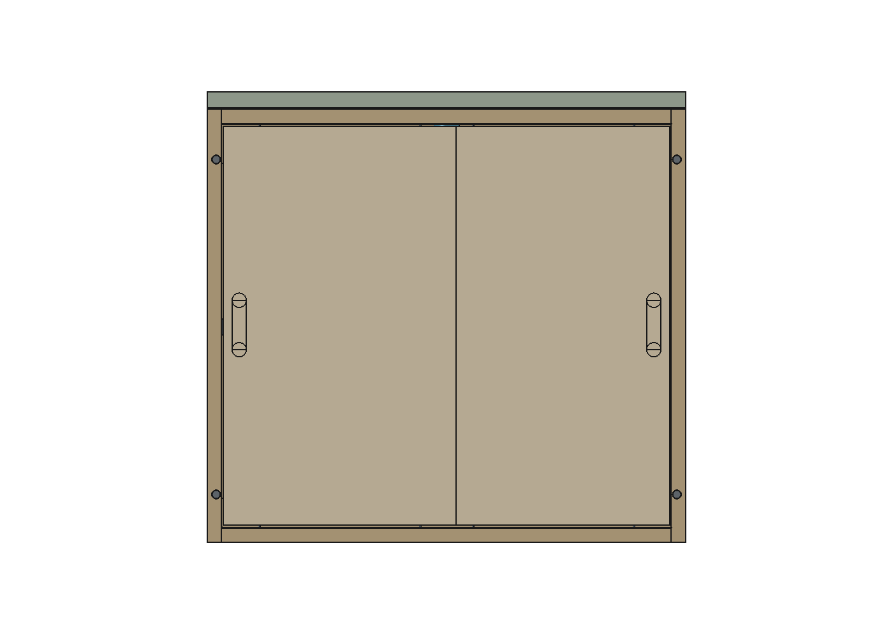
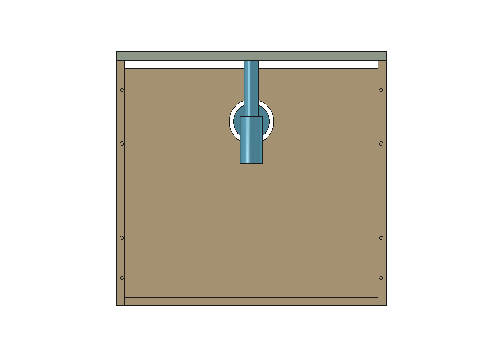

GUEDALA PARK · BANHEIRO · ESTUDO R02
As portas e os trilhos saem juntos para a manutenção. A caixa e seu espaço interno são mantidos.


| Espaço interno da caixa | 564 ×382 ×509 mm, preservado |
| Volume bruto | 109,66 L; hidráulica e conteúdo ainda devem ser descontados |
| Frente removível | 600 ×70 ×543 mm;4 M6 e4 cavilhas de alinhamento |
| Portas | 2 folhas292 ×500 ×18; transpasse24 mm |
| Acesso cotidiano | 270 mm à esquerda /235 mm à direita |
| Acesso de manutenção | 564 mm livres após retirar o conjunto frontal |
| Folgas | 2 mm sob pedra;70 mm para a folha de entrada na posição salva |
| Retirada do conjunto | 20 mm à frente →120 mm à direita →330 mm à frente |
| Folga durante a retirada | 50 mm à porta ideal700;37,5 mm ao vaso depois do deslocamento lateral |
| Movimento simultâneo | 9 combinações conferidas; sem colisões no modelo |
| Capacidade estrutural | Não liberada: faltam material, resistência das uniões e suspensão |
| Hidráulica | Cenário de referência, sem seleção de compra nem ponto de esgoto confirmado |
Apoiar o conjunto e manter as folhas fechadas e imobilizadas antes de retirar os quatro parafusos M6. Não é necessário destravar as guias ou levantar as folhas.
Sem divisória central ou faixa técnica nova. Com o conjunto frontal retirado, passaram os testes de acesso frontal200×220, descida80 da parte inferior e retirada do sifão desconectado.
A referência Deca1680 foi usada apenas para ensaio. Posição de esgoto, válvula e flexíveis continuam indefinidos. O recorteØ100 no fundo é condicional a esse cenário.
O ensaio não transforma109,66 L brutos em volume útil de armazenamento.
Nove combinações das duas folhas sem colisões entre os componentes modelados. Envelopes móveis ampliados1 mm em cada face não interceptam a madeira. Parafusos têm caminho de extração livre; o acesso à esquerda é estreito junto à parede e exige ferramenta adequada.
O transpasse24 permite o cenário aritmético20–28. Há3 mm entre a reserva de ferragem e a outra folha, e2 mm sob a pedra. São margens do estudo, não tolerâncias medidas ou contratadas.
Modelo FreeCAD · Detalhamento e furações · Verificação geométrica · Auditoria adicional · Centros de furação
Manual RometalRO25 Rev11 · Seção oficialRM026 · Porca transversalHäfele · ConfirmatGTV · SifãoDeca de referência
# Gabinete do banheiro — fixação, ferragens e manutenção R02 21/10/2026. Estudo separado da R42, autorizado por Elias. Não é liberação para fabricação. Modelo: `Banheiro_Detalhamento_R02.FCStd`. Resultados reproduzíveis: `detalhar.py` e `Verificacao_R02.json`. ## Solução final desta rodada Caixa original com 564 × 382 × 509 mm de envelope interno mantida. Quadro frontal de 600 × 70 × 543 mm, desmontável inteiro com as duas folhas e os trilhos montados. Quatro parafusos M6 com porcas transversais embutidas unem esse quadro às laterais existentes. Quatro cavilhas alinham a união; coladas apenas no quadro, deixam o encaixe na caixa desmontável. Não colocar cola ou selante permanente na junta desmontável. O estudo de laterais prolongadas e travessa retirada separadamente foi descartado: o trajeto lateral cruzava o vaso e a retirada frontal atravessava as guias. A solução final remove o conjunto completo, sem depender de levantar as folhas ou destravar uma ferragem ainda representada por envelope. As folhas têm ferragens na face interna. A cava frontal é embutida, sem peça saliente. Os quatro acessos M6 ficam nos montantes do quadro, não nas folhas; prever tampas removíveis do acabamento, sem colar sobre o acesso. O modelo mostra os rebaixos e parafusos, ainda sem essas tampas. ## Peças e uniões propostas — mm | Item | Quantidade | Dimensão / observação | |---|---:|---| | Montantes do quadro | 2 | 18 × 70 × 543 | | Base e topo do quadro | 2 | 564 × 70 × 18; entre os montantes | | Folhas | 2 | 292 × 500 × 18; transpasse24 | | Confirmat de união do quadro | 4 | 7 × 50; um por extremidade da base/topo | | Cavilhas de união permanente do quadro | 4 | Ø8 × 30; completam a orientação dos encontros | | Parafusos de retirada do conjunto | 4 | M6 × 100; cabeça cilíndrica nominalØ10 ×6; rebaixoØ11 ×6 no estudo | | Porcas transversais | 4 | M6, Ø10 ×14; referência dimensional Häfele264.82.014 | | Cavilhas na interface desmontável | 4 | Ø8 ×30;15 em cada peça; colar apenas no quadro | | Kits RO25 | 2 | Cada um:2 carros e2 guias, conforme manual Rev11 | | Trilhos RM026 | 4 | 564; dois inferiores e dois superiores | | Parafusos das ferragens RO25 | 24 | 3,5 ×12 CF:4 por carro e2 por guia no detalhamento | | Batentes | 4 | Contatos de fim de curso, um com prolongamento de35 para manter a cava traseira visível; três pads2 colados; o calço traseiro35 + pad2 recebe2 parafusos4×50 | O calço traseiro recebe dois parafusos4×50, eixosY4860/Z465/475, pela faceX2813 em direção à lateral esquerda;15 de penetração nominal na lateral, deixando3 até o exterior. As cabeças ficam sob o pad removível. Pré-furar conforme chapa, sem colar o conjunto frontal à caixa. Os batentes são propostas dimensionais, não acessórios homologados RO25. Não substituir a retenção própria do sistema por um simples batente. Montar e regular conforme o kit real. Não foi localizado STEP oficial; carros e guias continuam identificados como envelopes. ## Cotas das fixações Sistema global da R42: X transversal; Y cresce para o fundo; Z é altura sobre piso. Face frontal do quadro Y4820, junta quadro/caixa Y4890. - Quatro M6: X2771/3349, Z260/680. Relativo à face externa esquerda do quadro: X11/589; alturas60/480 a partir de sua base. Cabeças rebaixadas pela frente. Furo passante ilustrativoØ6,5. Verificar comprimento de rosca útil no parafuso escolhido. - Porcas: eixo Y4915,25 atrás da junta; furoØ10 ×14 pelas faces internas das laterais. Face rente, sem peça saliente no volume de guarda. Restam4 de madeira até a face externa; não aprovar resistência apenas por essa medida. - Cavilhas de retirada: mesmos X, Z350/560;15 de engaste em cada lado da junta. - Confirmat: Y4855; Z209/734, nas extremidades X2760/3360, atravessando os montantes e entrando na base/topo. Pré-furo escalonado e rebaixo conforme parafuso/material real; o modelo representa o diâmetro nominal, não uma broca de produção. - Cavilhas das uniões do quadro: Y4882, mesmos Z209/734; afastadas dos rasgos dos trilhos. - Rasgos:8 ×8; eixos Y4840/4870. Base: topo218; topo do quadro: face inferior725. A seção oficial RM026 informa largura12, altura6,5 e abertura3,15; espessuras de parede não cotadas foram simplificadas no CAD. Os parafusos de montagem dos cantos são instalados em bancada antes de aproximar o quadro da parede. Apenas os quatro M6 frontais são retirados na manutenção habitual. Selar bordas, cavas e furos contra umidade, usando acabamento compatível com a chapa; a especificação do painel e sua capacidade de ligação não foram fornecidas. ## Folhas e ferragens O quadro termina emZ743, deixando2 de folga sob a pedra. Vão frontal vertical507; folha500 conforme regra do manual (vão−7). Painel dianteiro Y4822–4840, traseiro Y4852–4870. Ferragens voltadas para Y crescente. Intervalo entre painéis12; envelope de ferragem9 deixa3 para a outra folha. Esses9 são uma reserva de estudo, não dimensão homologada do carro. Furação de referência em cada extremidade: centroØ32 ×10 a45 da borda e11 da base; centros de fixação inferior (13,12), (22,16), (67,5,16), (77,12), espelhados na outra extremidade. Guia superior:45 da extremidade, centros19/44 abaixo do topo. O JSON de furação identifica cada centro. PilotoØ2,5 ×10 é ilustrativo; verificar necessidade da cavidade e execução correspondente à variante sobreposta/embutida recebida antes de usinar. Restam8 de chapa atrás da cavidade10. Cavas18 ×80 ×6, centro a20 da borda livre de cada folha; posição vertical fora das ferragens. Curso dianteiro268, traseiro233. A redução de35 no curso traseiro mantém sua cava exposta quando as folhas se sobrepõem. Acesso esquerdo270, direito235. O armazenamento permanece igual, mas a abertura cotidiana é menor que o vão inteiro. ## Manutenção: percurso conferido 1. Esvaziar a área de trabalho, fechar e imobilizar as folhas. Apoiar o quadro inteiro antes de soltar os quatro M6. A madeira do quadro e folhas pesa aproximadamente5,08–7,03 kg para densidades hipotéticas650–900 kg/m³, mais ferragens. 2. Retirar20 para a frente, desencaixando as cavilhas. A frente passa deY4820 para4800. A folha de entrada ideal termina emY4750: margem nominal50 nesta etapa. 3. Deslocar120 para a direita. O quadro passa a X2880–3480, contornando a porta de entrada (X máximo2860) e ficando antes do volume do vaso (X mínimo3517,5). 4. Retirar mais330 para a frente. Os volumes varridos das três etapas foram conferidos contra os sólidos próximos mantidos da R42 e as peças fixas novas, sem interseções. As cavilhas foram verificadas separadamente nos próprios furos. 5. Com a frente retirada, acesso livre de564 de largura e527 até a pedra. O percurso inverso recompõe a montagem. Esse teste é geométrico: não inclui mãos carregando o quadro, ferramentas, deformações, material exato, tolerâncias ou maçaneta ausente no modelo. A margem50 depende da folha ideal de700 da R42; uma porta real maior pode inviabilizar esse trajeto. Não reiterar pedido de medidas ao usuário: conferir na futura vistoria/documentação. ## Sifão: hipótese explícita, sem nova escolha de compra Não há sifão nem ponto de esgoto definido na R42. A cuba preferida continua Deca Slim L.13040.17; não foi alterada. Referência de dimensão para o ensaio: Deca1680.C.100.112, corpoØ49, queda máxima229,93 abaixo do eixo de saída; largura total publicada80. Isso não o torna especificado ou comprado. No cenário: eixo X3060/Y5040, entradaZ745, saídaZ609, fundoZ516. Tubos são envelopes simplificados. O percurso posterior precisa ser compatibilizado com a válvula, comprimentos efetivos e ponto real. RecorteØ100 no fundo, X3060/Z609, apenas nesse cenário: não fabricar esse recorte antes de definir a hidráulica. Conferidos, com o quadro retirado: corredor frontal200 ×220 para acesso, descida de80 da parte inferior e saída frontal do conjunto já desconectado, sem colisão com a marcenaria/contexto. Sobram298 entre o fundo do sifão de referência e a base; após a descida80 restam218. Não demonstra conforto das mãos, ferramenta real ou desmontagem de conexões não modeladas. Não é necessário criar divisória, prateleira adicional ou faixa técnica fixa que retire armazenamento. ## Resultado e limites Sem formas inválidas. Varreduras dos painéis e trajeto de retirada do conjunto sem colisões no escopo modelado. Invasão do envelope interno pelos apoios e fixações:0 mm³.109,66 litros é volume geométrico bruto, não capacidade útil depois de hidráulica/conteúdo. Principal R42 sem alteração, hash registrado no JSON. Antes de aplicar: confirmar material e resistência da união/suspensão para o peso acrescentado; conferir dimensões reais, retenção e ajuste do RO25/batentes; definir hidráulica e confrontar a porta de entrada real. O limite30 kg publicado para o RO25 não é capacidade estrutural do gabinete ou desta união. O detalhamento permite revisão, mas não encerra essas verificações físicas. ## Fontes primárias - [Rometal RO25](https://www.rometal.com.br/sistemas/solucoes-para-armarios-compactos/s/na-base-sobrepostos-1/ro-25) e [manual Rev11](https://www.rometal.com.br/download/414fa721-9208-432f-9d77-23769d2a5733). - [Seção RM026](https://www2.rometal.com.br/uploads/KhZtTAeq93JZ714aIOPy1hO5JSBngVSGzpE54Wb9.png):12/6,5/3,15. - [Häfele, porca transversal M6 Ø10×14](https://files.hafele.co.uk/catalogfiles/www/14CFC412.pdf): referência dimensional histórica, sem confirmação de oferta local. - [GTV confirmat7×50](https://gtv.com.pl/en/produkt/WK-CF0750-01/): tipo de união a90° de chapas; não fornece capacidade desta montagem. - [Ficha Deca1680](https://produtos.deca.com.br/1680.C.100.112/fichaTecnica/ficha_tecnica_1622477446278_1680.C.100.112.pdf), cópia e página renderizada nesta pasta. ## Auditoria adicional de tolerâncias e movimento `Auditoria_independente.json`: nove combinações de abertura das duas folhas, incluindo carros, guias, parafusos, trilhos, madeira e batentes, sem interseções no modelo. Extração dos quatro M6 conferida com cilindroØ11, sem colisão; na esquerda restam5,5 até a parede para esse cilindro. Isso pede ferramenta compacta adequada; não constitui prova de ergonomia da mão. Envelopes móveis ampliados1 em cada face ainda não interceptam a madeira (excluídos os contatos intencionais com batentes). Cenários aritméticos independentes: transpasse24 com variação total±4 →20–28; espaço3 entre ferragem hipotética e outra folha, com avanço1 em cada lado →1; folga2 sob pedra menos1 de desvio →1. Não são tolerâncias de produção contratadas nem se somam como garantia global. No trajeto de manutenção, folgas nominais:50 para a folha de entrada700,37,5 para o volume do vaso após deslocar à direita,5 após desencaixar as cavilhas. Uma folha750 deixaria0 na primeira retirada20; portanto a medida real continua sendo uma condição necessária. O estudo não exige responder agora com medidas ainda indisponíveis.